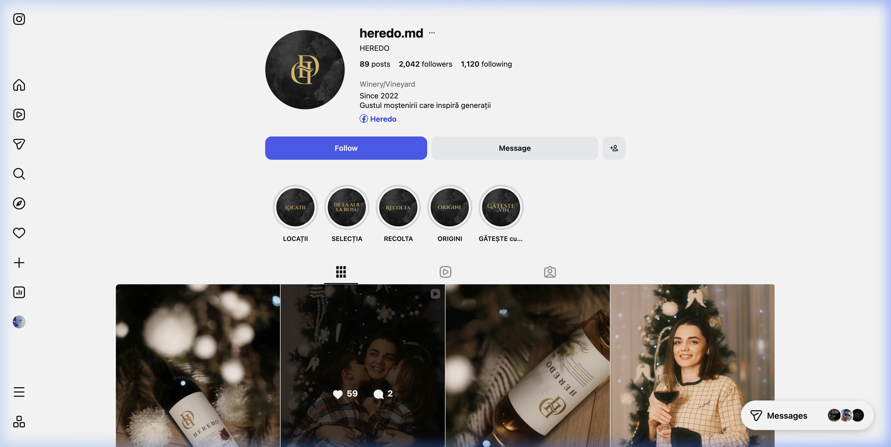
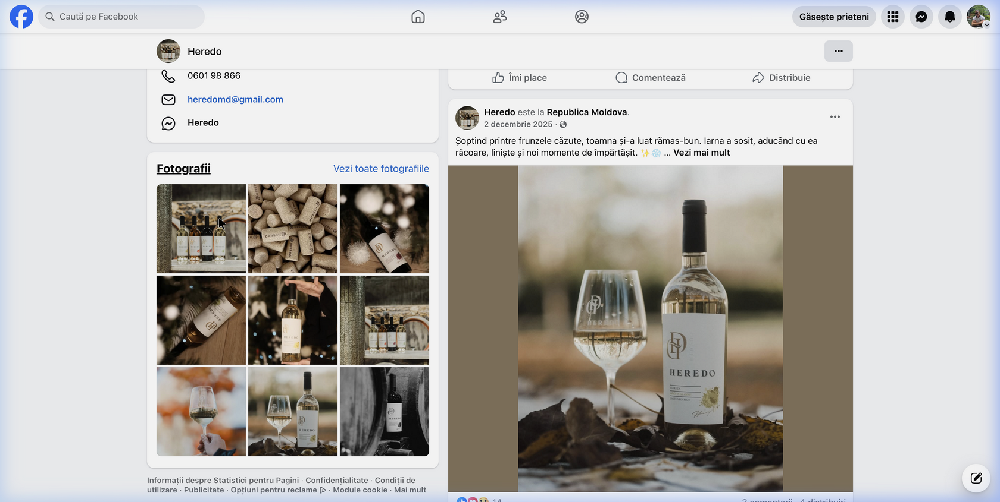

Mulțumesc pentru întâlnirea din 25 martie și pentru deschiderea cu care mi-ați prezentat povestea Heredo. Am plecat de la acea conversație cu un respect profund față de ceea ce construiți — nu doar un vin, ci o moștenire.
În zilele care au urmat, am făcut ceea ce știu eu cel mai bine: am analizat. Am studiat fiecare postare de pe Instagram și Facebook. Am urmărit toate interviurile dumneavoastră și am citit în presă despre Heredo și despre dumneavoastră. Am cercetat piața vinului din Moldova, am comparat Heredo cu alte vinării din țară și din afară, am examinat prețurile, pozițiile în piață și percepția consumatorilor pe platforme internaționale precum Vivino.
Am folosit instrumente profesionale de analiză digitală — de la colectare de date de pe rețele sociale, până la cercetare de piață și analiză competitivă. Tot ce veți găsi în acest document este rezultatul acelei cercetări.
Scopul acestui document nu este să vă vând ceva. Este să vă arăt că am înțeles ce este Heredo, unde se află acum, unde poate ajunge — și cum pot contribui eu la acel drum.
Am structurat analiza în câteva secțiuni clare: situația actuală a brandului, auditul rețelelor sociale, contextul competitiv și, la final, ce pot oferi concret pentru a aduce Heredo la nivelul vizual pe care calitatea vinului dumneavoastră îl merită.
Cu respect,
Document confidențial — pregătit exclusiv pentru Cristina Olărescu / Heredo
Înainte de a propune orice direcție creativă, am vrut să înțeleg Heredo în profunzime — nu doar ca brand, ci ca poveste, familie și ambție.
| Identitate | |
|---|---|
| Numele brandului | HEREDO — din latină, „moștenire" |
| Fondatoare | Cristina Olărescu — întoarsă din Irlanda pentru a continua via părinților |
| Locație | Gura Galbenei, raionul Cimișlia, Republica Moldova |
| Suprafață | ~30 hectare de viță de vie |
| Echipament | Importat din Italia — fermentare, păstrare, îmbuteliere |
| Prima producție | 2021 — medaliată de la prima participare |
| Membru | Asociația Micilor Producători de Vinuri din Moldova |
+ 4 vinuri noi în lansare (următoarele săptămâni)
Heredo este prezentă pe Vivino (platforma internațională de rating al vinurilor) cu un scor de 3.9 din 5, dar cu foarte puține recenzii — ceea ce indică un potențial enorm nevalorificat pe plan internațional.
Heredo are fundamente solide: un nume memorabil, o poveste autentică și un produs de calitate. Dar identitatea vizuală și prezența digitală nu reflectă încă nivelul real al brandului.
Logo-ul Heredo — monograma „H" în auriu pe fond închis — comunică eleganță și exclusivitate. Este inspirat de stilul caselor de modă de lux (similar cu monogramele Chanel sau Louis Vuitton). Etichetele folosesc hârtie de calitate superioară, tipografie serif clasică și un design minimalist.
Paleta cromatică (negru, auriu, crem, burgund) este corectă pentru segmentul premium. Fotografia de produs este atmosferică — lumini calde, fundal bokeh, compoziții elegante.
Există un decalaj semnificativ între calitatea produsului (medaliată, echipament italian, soi autohton Viorica) și prezența digitală. Succesul real al Heredo nu este reflectat în online. Acesta este spațiul în care pot contribui cel mai mult.

| Metrică | Valoare | Observație |
|---|---|---|
| Urmăritori | 2.042 | Audiență reală, organică — nu cumpărată |
| Postări | 89 | ~2 postări/lună pe 3+ ani — prea puțin |
| Rată de interacțiune | ~1.5-3% | Medie — audiență implicată dar mică |
| Like-uri medii | 15-60 | Consistent, dar limitat de frecvența postării |
| Bio | Winery/Vineyard · Since 2022 · Gustul moștenirii care inspiră generații | |
| Link | Direcționează către Facebook (ideal ar fi un website) | |

| Metrică | Valoare | Observație |
|---|---|---|
| Aprecieri | 575 | Foarte puțin pentru o vinărie din Moldova |
| Urmăritori | 575 | Creștere stagnantă |
| Recenzii | 2 | Insuficient pentru credibilitate |
| Cel mai bun post | Video artistic (desen) — 3.800 de vizualizări | |
Un singur video artistic a obținut 3.800 de vizualizări pe Facebook — în timp ce postările foto obțin în medie 30-50 de interacțiuni. Aceasta este o diferență de 70-100x în reach.
Concluzia este clară: audiența Heredo vrea conținut video. Acesta este cel mai mare levier de creștere disponibil în acest moment.
| Platformă | Status | Impact |
|---|---|---|
| Website propriu | Inexistent | Fără credibilitate B2B, fără punct central de prezentare |
| Inexistent | Invizibil pentru importatori, restaurante, distribuitori | |
| Google Maps | Inexistent | Vinăria este complet invizibilă pentru turiști și vizitatori |
| Vivino | 2 recenzii | Potențial internațional nevalorificat |
| Email profesional | Gmail generic | Nu inspiră profesionalism pentru B2B |
Am analizat 7 vinării boutique din Moldova pentru a înțelege unde se poziționează Heredo. Rezultatele sunt relevante.
| Vinăria | Website | Segment |
|---|---|---|
| Purcari | purcari.wine | Lux tradițional |
| Castel Mimi | castelmimi.md | Turism + premium |
| Château Vartely | vartely.md | Premium familial |
| ATU Winery | atu.wine | Boutique urban |
| Et Cetera | etceterawinery.md | Premium nișă |
| Gogu Winery | gogu.wine | Artizanal |
| HEREDO | Nu există | Artizanal familial |
Heredo este singura vinărie boutique serioasă din Moldova fără website. Fiecare competitor — inclusiv vinării mai mici — are unul. Într-o piață unde exportul Moldovei a crescut cu 22% în 2024, lipsa unui website înseamnă pierderea sistematică de oportunități.
Republica Moldova trăiește un moment de aur în industria vinului. Heredo poate profita de această tendință — dar are nevoie de imaginea potrivită pentru a face asta.
Piața crește. Exportul explodează. Vinurile moldovenești câștigă medalii la nivel mondial. Dar într-o piață cu peste 300 de producători, diferențierea prin imagine devine critică. Calitatea vinului nu mai este suficientă — trebuie ca și povestea vizuală să fie la cel mai înalt nivel.
Vinăriile care investesc în imagine acum vor fi cele care captează piețele noi. Cele care nu o fac, vor rămâne invizibile — indiferent de cât de bun este vinul lor.
Pe baza analizei de mai sus, am identificat exact unde pot aduce valoare brandului Heredo. Mai jos, fiecare serviciu este descris în detaliu.
Un website elegant, modern, care reflectă poziționarea de lux a Heredo. Secțiuni dedicate pentru fiecare vin, povestea familiei, procesul de producție, și o pagină specială pentru parteneri B2B (importatori, restaurante). Design responsive — frumos pe telefon, tabletă și desktop.
Un clip scurt (15–30 secunde) care captează esența Heredo într-un format concentrat și puternic — de la podgorie la pahar. Realizat folosind cele mai noi tehnologii de generare video, combinat cu materialele existente. Conceptul: eleganță, natură, procesul artizanal — fără dialog, doar emoție pură.
Câte un video scurt, elegant, pentru fiecare vin nou — perfect pentru anunțul de lansare pe social media. Fiecare video va reflecta personalitatea vinului respectiv.
Un plan de conținut pe 30 de zile, cu teme, frecvență de postare, tipuri de conținut (foto, video, stories, reels), și recomandări de hashtag-uri. Include template-uri vizuale pe care le puteți folosi pe cont propriu.
Configurarea email-ului profesional (@heredo.md) și crearea paginii Google Maps a vinăriei — cu fotografii de la locație, informații de contact și direcții. Pe LinkedIn, vă recomand să vă creați dumneavoastră profilul și pagina companiei: vocea și povestea fondatoarei sunt cel mai puternic semnal de încredere pentru parteneri B2B; pot oferi, la nevoie, un scurt ghid de structură și puncte de bifat, fără să preiau contul.
Am discutat deja și ne-am aliniat pe direcție. Următorul pas este să demarăm formal faza de concept și demo: un preview de website și un preview de video ad — ca să vedeți concret cum ar arăta viziunea pusă în practică. Fiecare decizie creativă rămâne la dumneavoastră; după ce vedeți demo-urile, stabilim împreună oferta pentru livrarea finală.
Pentru a începe această fază (concept + demo website + demo video), propun un onorariu de 350 EUR, plătibil la confirmarea în scris a colaborării pentru această etapă. Suma acoperă demararea procesului creativ și alocarea dedicată proiectului; nu include site-ul sau materialele finale — acestea fac obiectul unei oferte separate după feedback.
După primirea confirmării și a plății, estimez 5–10 zile lucrătoare pentru a vă prezenta ceva concret pe care îl putem discuta și ajusta.
Titular: Riccardo Glisha Radu
Țara contului: Belgia
IBAN: BE17 9054 5639 6121
BIC/SWIFT: TRWIBEB1XXX